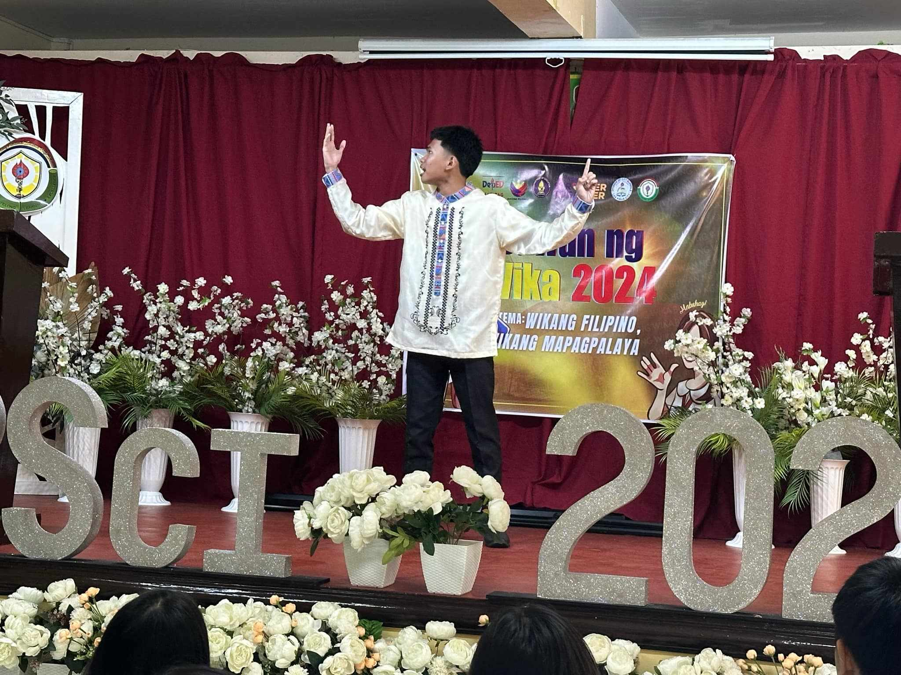

Date of Presentation: August 8, 2024

Source: John Riz D. Dancal
Source: Sofia Angela V. Chua
Date of Grading: September 6, 2024


Source: Sofia Angela V. Chua
Play Music for Relaxing Experience.(LOTR Music: Sound of the Shire)
| Activity | Date | Description | Image |
|---|---|---|---|
| Buwan ng Wika Opening | August 5, 2024 | The Buwan ng Wika Opening introduced all the Filipino activities for the month and featured lapsicians playing music and dancing. | |
| Science Human (Organ System) Simulation | Date of Practice: August 7, 2024 Date of Presentation: August 8, 2024 |
Lapiscians have to recreate the Cardiovascular System and Respiratory System. (The following image is among one of the numerous practices done by Fairness.) | |
| School-based Declamation Competition | August 20, 2024 | The school-based declamation competition was held in the school auditorium. One representative was chosen from each Grade 9 section. (The following image features John Riz D. Dancal, the representative for 9-Fairness.) |  Source: John Riz D. Dancal |
| English Conditionals Song | August 20, 2024 | The English Song Performance was about the different types of conditionals. Our group was assigned with "zero conditionals," which means we have to use present tense all throughout the song. | |
| LPSci 15th Foundation Day | August 24, 2024 | The LPSci Community celebrated its 15th year as an educational institution for students who excel in academics, especially in the field of Science and Math. This day had many well-planned booths and events, including food stands, Basketball and Volleyball games, raffles to win prizes, club booths, and more! | Source: Sofia Angela V. Chua |
| MAPEH Stained Glass Activity | Submission Date: August 30, 2024 Date of Grading: September 6, 2024 |
The MAPEH Stained Glass activity is a performance task where we cut designs on two illustrations boards and use them to sandwich different colors of cellophane to create a beautiful recreation of stained glass art of the past, usually showing religious symbols or depictions. | |
| Filipino Debate | September 13, 2024 | The Filipino Debate was an intellectual battle among different groups of students who were given the chance to decide on the topic. Groups 1 and 2 debated about the idea of allowing contraceptives to be sold in school while Groups 3 and 4 debated about the valedictorian system. | Source: Sofia Angela V. Chua |
| MAPEH Music Video | September 23, 2024 | The MAPEH Music Video was created to bring awareness to people about our environmental issues. The students were divided into 5 groups and they can create a song parody or create an original song. |
| Activity | Date | Description | Image |
|---|---|---|---|
| Teachers' Day | October 4, 2024 | Teachers' Day is a day dedicated to the teachers. It is a moment of celebration for their efforts to building a better, brighter future for the students of the country. | |
| Intrams | October 7-11, 2024 | The Intramurals provided an opportunity for all students to participate in a variety of sports, such as Chess, Volleyball, Basketball, Table Tennis, and more. | |
| DSTF | October 9, 2024 | The Division Science and Technology Fair is a competition for different Science project from different schools in Las Piñas. | |
| Historical Icon | November 8, 2024 | The Historical Icon is an AP Month Event showcasing notable historical figures. One representative from each section presents the historical figure and introduces the individual to the judges and students. |  |
| RSTF | November 6-8, 2024 | The Regional Science and Technology fair is a competition for different Science projects from different schools in the NCR Region. It also includes a division science poster, a student mixer (games), and numerous award for different research projects. | |
| Cluster Meet | November 14-16 | The Cluster Meet is a competition among different schools from different clusters in sports (LPSci is Cluster 3.) | |
| Booklandia | November 19, 2024 | Booklandia is an English Month event where students cosplay as characters from different stories. The event is filled with thrill and excitement as the crowd cheers on who they want to win. |  |
| Persona Articulata | November 20, 2024 | It is a pageant solely based on brains and perception. The candidates will be asked questions in which they will answer in their own way, given that it is up to them how they interpret the said question. |  |
| SHS Entrepreneurship Fair | November 19-22, 2024 | The entrepreneurship fair is a chance for SHS students to practice their business skills. It is also a chance for JHS students to indulge in different delights and products. |
| Activity | Date | Description | Image |
|---|---|---|---|
| MAPEH Street Dance | February 21, 2025 | THE MAPEH Street Dance is a dance competition among different batches. Each batch is divided into two groups, with two sections per group. All groups present their own, original and unique style of dancing with the theme as their guide. | |
| Battle of the Bands | February 22, 2025 | The Battle of the Bands is a sensational event that Lapiscians are eager to watch. Students can form their bands (the students can be from other sections) and have to perform songs that follow a specific music genre. | |
| Miting De Avance | February 28, 2025 | The Miting De Avance is an event where the student body asks the election candidates different questions about leadership, management, etc. This helps students understand how the candidates think and helps them decide who they would vote for. |  |
| Brainiac: Robotics Challenge (National) | March 8, 2025 | The Robotics Challenge is a national competition where student researchers can showcase their innovations/inventions related to the medical field. | |
| MAPEH Zumba | March 13, 2025 | The MAPEH Zumba is a PE performance task that shows an easy and simple type of recreational activity. | |
| Leadership Seminar | March 13, 2025 | The Leadership Seminar is an event for student leaders to help them grow and improve their leadership skills. | |
| English Play | March 17, 2025 | The English Play is a theater performance that encapsulates societal issues and life events. |